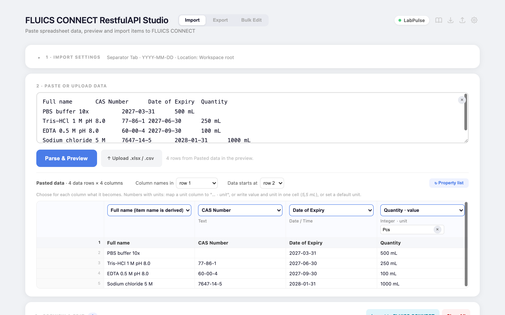
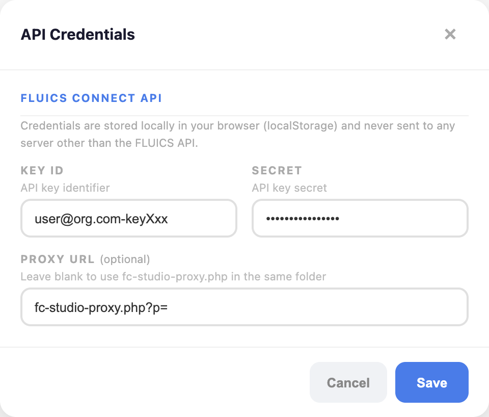
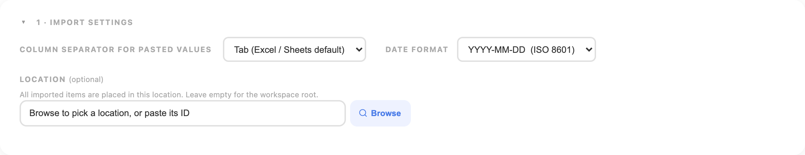
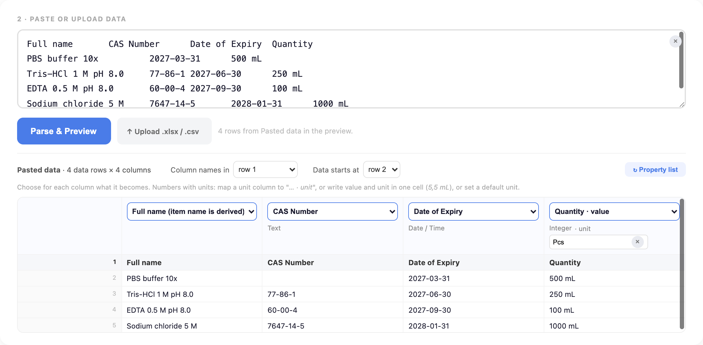
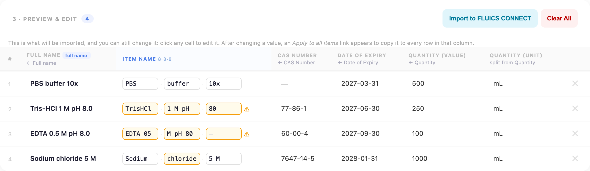
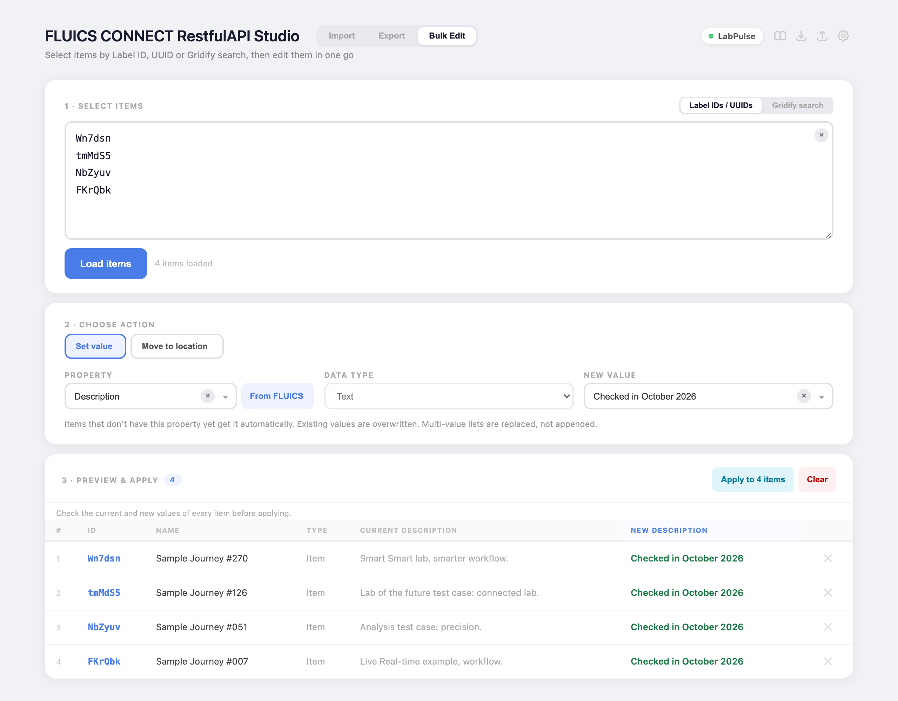
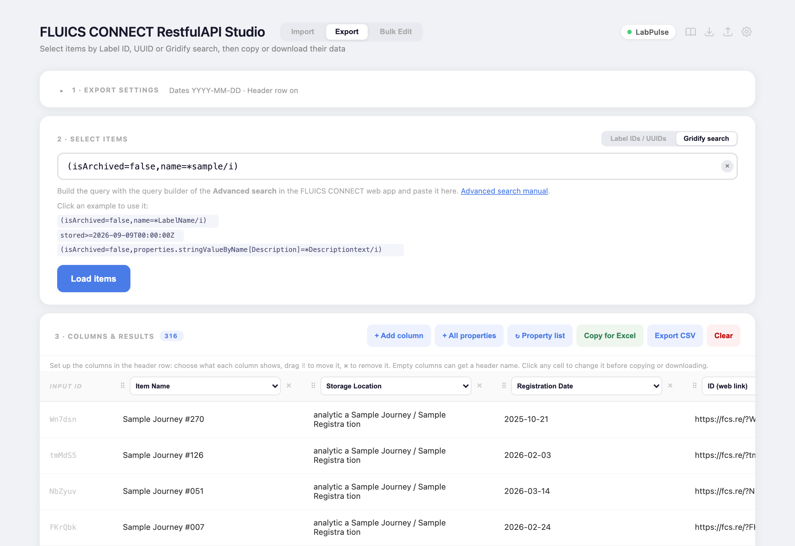

User Manual
FLUICS CONNECT RestfulAPI Studio: for lab scientists comfortable with Excel, no API experience required.
What it is
FLUICS CONNECT RestfulAPI Studio is a browser-based tool that lets you move data between spreadsheets and your FLUICS CONNECT inventory in bulk, without touching the FLUICS web interface one item at a time.

The Import tab: pasted rows, each column mapped to a workspace property.
Switch between Import, Export, and Bulk Edit using the tab buttons in the header.
| Module | What it does |
|---|---|
| Import | Paste rows from Excel or a CSV, map the columns, preview the result, and register new items in FLUICS CONNECT. |
| Export | Paste a list of Label IDs or UUIDs (or use a Gridify search), choose which fields to pull, and get a table you can copy straight into Excel or save as CSV. |
| Bulk Edit | Select items by Label ID, UUID or Gridify search, then set a property value or move them to another location, with a before/after preview. |
Setup
Quickest start
The latest version is hosted at link.fluics.com/apistudio: open it in Chrome or Firefox and you're ready. No installation needed. The source code is at github.com/FLUICS-com/api-studio.
What you need
- A FLUICS CONNECT API key (Key ID + Secret), required. Obtain it from FLUICS. Without it the app cannot connect to your workspace.
- A modern browser (Chrome or Firefox recommended).
API reference
The app communicates with the FLUICS CONNECT REST API. The full endpoint reference is available in the Swagger UI at devapi.fluics.com/swagger (V2.0-PUBLIC). Refer to it if you want to understand what data fields are available or extend the app for your own workflow.
Adapting the app to your needs
The entire application is a single HTML file (fc-studio.html) with all JavaScript and CSS inline: no build step, no dependencies. You can open it in any text editor, adjust column defaults, add new system fields, change the UI, or hook into additional API endpoints. Changes take effect immediately on reload.
Self-hosting (optional)
If you prefer to run the app on your own server or machine, place fc-studio.html and fc-studio-proxy.php in the same folder on any PHP-capable web server.
To run locally with PHP installed, open a terminal in that folder and run:
php -S localhost:8080Then open http://localhost:8080/fc-studio.html in your browser.
Enter your API credentials
Connected workspace (green dot) and the header icons.
Top-right header icons (left to right): Manual · Download config · Upload config · API credentials
Click the gear icon (far right) to open the API Credentials dialog.
| Field | What to enter |
|---|---|
| Key ID | Your API key identifier, e.g. user@lab.com-keyAbc |
| Secret | Your API key secret |
| Proxy URL | Leave blank when running from the same folder as fc-studio-proxy.php. Otherwise enter the full URL, e.g. https://yourserver.com/fc-studio-proxy.php?p= |
api.fluics.com (via the proxy).
The API Credentials dialog (gear icon, top right).
Import module
Use this to register new items in FLUICS CONNECT from spreadsheet data.
Import settings
The Import tab has three boxes: 1 · Import settings, 2 · Paste or upload data and 3 · Preview. The settings box is closed by default and shows a one-line summary; click it to open. Changes are saved automatically (a short "Saved" note confirms it).
| Setting | Options |
|---|---|
| Column separator for pasted values | For pasted text: Tab (default from Excel/Sheets), Comma, Semicolon. CSV files are detected automatically. |
| Date format | How date text is read: ISO 8601 (YYYY-MM-DD), with time, or EU/US Excel formats. ISO dates and real Excel date cells always work. |
| Location (optional) | All imported items are placed here. Click Browse to pick it from the location tree, or paste its ID. |
Which columns become which properties is decided in box 2 (mapping), not here.

Box 1 Import settings, opened.
Paste or upload your data
Either copy rows from Excel and paste them into the text area, then click Parse & Preview, or click Upload .xlsx / .csv (or drop the file on the text area). Excel files with several sheets show a sheet selector; switching sheets replaces the rows of the previous sheet. Pasted text uses the Column separator setting; the separator of CSV files is detected automatically.
The text stays in the box, and uploaded sheets are shown there too. Below it, the detected data appears: the rows and columns exactly as they were read, with row numbers.
Header and data rows: Column names in sets the row with the column names (or no row if there is none), Data starts at the first row with items. The app guesses both: the header is the first of the top 5 rows that fills at least half of the columns and has no numbers or dates, so a title row above the table is skipped. The table shows the column names once (under the dropdowns, with their row number) and then only the data rows; rows above the data start that are not the header (title rows, a units row) are listed as skipped and not imported. Changing the header row sets the data start to the first non-empty row below it. Row numbers match the rows in Excel; empty rows are never imported and are hidden in the table.
Mapping: above each detected column a dropdown sets what it becomes:
- Ignore: not imported (the column is greyed out).
- Full name: required; the 3×8-character Item name is derived from it.
- A property from your workspace (Integer and Decimal properties appear twice: · value and · unit). The list is loaded from FLUICS once and cached; ↻ Property list reloads it.
- + New property…: asks for a name (the column header is suggested); pick its data type in the small dropdown under the column.
Columns are suggested automatically: by name (Lot number, Volume (value) / Volume (unit) as Export writes them, Volume unit, Volume Einheit, Name for Full name), and your own choices are remembered for the next time (per column name, or per column position when there is no header row). Each property can only come from one column.
The preview (box 3) follows the mapping immediately. Changing the mapping rebuilds the preview rows, so edits made in the preview for those rows are replaced. Under each preview column header a small note shows where the values came from.
Integer and decimal values with units: either map a separate unit column to … · unit, or write value and unit in one cell (5 mL, 5,5 mL), which is split automatically. For cells without a unit, the unit field under the value column sets a default (pre-filled with the workspace unit). Decimal commas and thousands separators are understood (1.234,5 and 1,234.5 both become 1234.5).
Dates: ISO dates (2027-02-03) and real date cells in Excel files are always understood; other text is read with the Date format setting (e.g. 03.02.2027 for DD.MM.YYYY). Impossible dates are reported as an error for that property.

Box 2: pasted rows with the mapping dropdown above each column.
Preview & edit
The preview table shows every item that will be created.
- Click any cell to edit it inline.
- Item Name (the 3-line label text) is auto-derived from the Full name; only letters, numbers, and spaces allowed. Cells highlighted in orange contain characters that were stripped.
- Apply to all items: hover over any non-empty editable cell to reveal a small link below it; click it to copy that value to every row in the same column. Useful for batch-setting a unit, category, or lot number.
- Delete a row with the ✕ button on the left.
- Clear All removes all rows from the preview.
Hovering over a filled cell reveals the "Apply to all items" link below it. Cells highlighted in orange had special characters stripped from the Item Name.

Box 3: the preview. The Item Name is derived from the Full name; orange cells had characters removed.
Import
Click Import to FLUICS CONNECT. First every number and date that will be written is checked; if one is malformed or out of range (for example 12abc, 1.2.3, an integer above 2,147,483,647 or the 30 February), nothing is created and a list names the row and column to fix. Then a progress dialog shows each item as it is created. Errors are listed with the reason. The dialog stays open when finished; click Close when done.
Complete items leave the preview, so a second click cannot create them twice. If an item was created but one of its properties could not be written, the row stays in the preview marked ↻ (hover it to see the object id and the failed properties). Fix the value if needed and click Import again: only the failed properties are written, the item is not created a second time.
The preview rows belong to the columns they were made for. If the columns change (another mapping, an imported configuration), rows made for other columns are removed with a note, so no value ends up in the wrong property; rows marked ↻ are listed first, so you can complete them with Bulk Edit.
Bulk Edit module
Use this to change many existing items at once: set a property value or move items to another location.
Select items
Choose how to pick the items with the toggle in the top right of the card:
| Mode | When to use |
|---|---|
| Label IDs / UUIDs | Paste one per line. Scanned links (fcs.re/?aB3dE9) work too. Duplicates are removed; archived items are listed as Archived and not edited. |
| Gridify search | Type a filter, e.g. (isArchived=false,name=*LabelName/i) (/i = ignore case, * = contains). The same search is available in the Export tab. Comma means AND, | means OR, parentheses group. Click one of the examples below the field to start from it, or build the query with the query builder of the Advanced search in the FLUICS CONNECT web app and paste it (see the Advanced search manual). Archived items are included; add ,isArchived=false to leave them out. Up to 1,000 matches are loaded. |
Click Load items. The table at the bottom lists every item found; IDs that could not be found are shown in red. Click an ID to open the item in FLUICS CONNECT in a new tab. Remove single rows with the × button.
Choose an action
| Action | What it does |
|---|---|
| Set value | Pick a property (click From FLUICS to list the workspace properties) and enter the new value. Items that don’t have the property yet get it. The data type is taken from the existing property; for a new one, choose it. Numbers accept a unit, dates use a date picker, multi-value lists take value;value and replace the old list. Suggestions show the 20 most common values among the loaded items. |
| Move to location | Click Browse and pick the target location from the location tree (type to filter; parent locations of matches stay visible, IDs appear with Show IDs), or Workspace root. Items are moved in batches of 100; if one item in a batch cannot be moved, that batch is left unchanged. |
Box 3 shows the current and new value for every item. Items that already have the new value are skipped.
Preview & apply
The Bulk Edit tab has the same three-box layout as Import and Export: 1 · Select items, 2 · Choose action, 3 · Preview & apply. Box 3 lists every item with its current and new value; the notes under its header say which items are skipped and why. Click Apply to N items in the toolbar of box 3; the edit starts right away (check the preview first). A progress window logs the result per item. Afterwards the table shows each item's previous value, its value now and a Result column; as soon as you change the property, value or location it switches back to the preview. If some items failed, Retry N failed sends only those again.

Bulk Edit: items selected by Label ID, a new Description value, and the before/after preview.
Export module
Use this to pull item data out of FLUICS CONNECT into a table.
Export settings
The Export tab has the same layout as Import: 1 · Export settings, 2 · Select items and 3 · Columns & results. The settings box is closed by default and shows a one-line summary; click it to open. Changes are saved immediately.
- Date format: how date/time values appear in the table and the output.
- Include header row: see Header row on or off.
The columns are set up in box 3, see below.
Select items
Use the switch on the Export card to choose how items are selected:
| Mode | When to use |
|---|---|
| Label IDs / UUIDs | You have the items' Label IDs (e.g. aB3dE9), scanned barcode URLs (fcs.re/?aB3dE9), or UUIDs. |
| Gridify search | You want all items matching a search query, e.g. (isArchived=false,name=*LabelName/i). Build it with the query builder of the Advanced search in the FLUICS CONNECT web app (see the Advanced search manual) or click one of the examples below the field. Up to 1,000 matches are loaded. |
For Label IDs / UUIDs, paste one identifier per line:
aB3dE9
Xy7Kq2
fcs.re/?aBcDeF
3f2a9c1e-5b7d-4e8a-9c0b-1a2b3c4d5e6fAccepted formats: Label ID, full fcs.re URL, or UUID.
Columns, results and export
Click Load items. A progress bar shows how many items have been retrieved. Errors appear inline in the result table.
Columns are set up directly in the header row of the table, before or after loading (the values fill in from the loaded items, no reload needed):
- The dropdown of a column chooses what it shows: (empty column), a system field, or a property (Integer and Decimal properties as Name (value) and Name (unit)). + Other property… takes any property name.
- ⠿: drag the column onto another column header to move it. × removes it. + Add column adds one at the end, + All properties adds every workspace property not shown yet, ↻ Property list reloads the list of properties.
- Empty columns can get a header name (the field under the dropdown) and their cells can be filled in, e.g. a "Checked by" column.
Every cell can be edited before copying or downloading: click it and type. Edited cells are highlighted and go into Copy for Excel and Export CSV. Changing what a column shows discards the edits in that column.
System fields:
| Field | What it returns |
|---|---|
| ID (web link) | Clickable web link to the item (https://fcs.re/?LID) |
| Storage Location | Full path of the storage location (e.g. Helmholtz / Freezer -80 / Rack 2), or Workspace root for items without a location |
| Item Owner | First + last name of the registered owner |
| Registration Date | Registration date (formatted per your date setting) |
| Item Name | The short printed label name |
| Button | What it does |
|---|---|
| Copy for Excel | Copies tab-separated data to clipboard; paste directly into Excel or Google Sheets |
| Export CSV | Downloads a .csv file |
| Clear | Clears the result table |

Export: items selected with a Gridify search, columns set up in the table header.
Header row on or off
Box 1 (Export settings) has the option Include header row. Leave it ticked to get the column names in the first row. Untick it when you are pasting into a sheet that already has its own headers, for example a customer template where the first rows are fixed. The setting applies to both Copy for Excel and Export CSV, and it travels with the configuration file.
Configuration management
Connected workspace (green dot) and the header icons.
Top-right header icons (left to right): Manual · Download config · Upload config · API credentials
The download and upload icons let you save and restore your settings as a JSON file.
| Icon | Action |
|---|---|
| ↓ (Download) | Export configuration to a .json file |
| ↑ (Upload) | Import a previously saved .json file |
The configuration file includes import column definitions, delimiter, date format, location assignment, export column definitions, input mode, search property, date format, and the header row setting.
Older configuration files still work. Anything saved before the header row option existed simply loads with the header row switched on, exactly as it behaved then.
Data types reference
| Data Type | Notes |
|---|---|
| Text | Free text. |
| Single-value list | One value from a pre-defined list. |
| Multi-value list | Multiple values, separated by semicolons: value1;value2;value3 |
| Integer (value | unit) | Whole number. Requires two columns: one for the number (Quantity (value)), one for the unit (Quantity (unit)). |
| Decimal (value | unit) | Decimal number. Same two-column requirement as Integer. Decimal commas and thousands separators are understood (1.234,5); anything else in the cell is rejected before the import starts. Integers must be whole numbers between -2,147,483,648 and 2,147,483,647. |
| Date / Time | Read with your date format setting; ISO dates (2026-10-13) always work. A time (12:00 or 12:00:30) and a time zone at the end (Z, +02:00, -0500) are respected: 2026-10-13 12:00+02:00 is stored as 10:00 UTC. Without a time zone the time is taken as UTC. |
| Barcode | Text treated as a barcode value. |
Integer and Decimal: the two-column rule
When you define a property of type Integer or Decimal, the app automatically creates two columns: one named PropertyName (value) and one named PropertyName (unit).
- Import: paste the number in the
(value)column and the unit (e.g.kg,mL) in the(unit)column. - Export: the
(value)column shows the number; the(unit)column shows the unit as stored in FLUICS CONNECT. If the unit column is empty, click ↻ Property list in box 3 and choose the (unit) column again to re-link the stored unit.
Tips & gotchas
Tab persistence
The app remembers which tab (Import, Export or Bulk Edit) you had open when you last closed it and restores it on the next visit.
"+ All properties" appends, does not overwrite
In Export, + All properties only adds properties that are not shown yet; your existing columns and their order are preserved, so it is safe to click it more than once.
Apply to all: hover to reveal
In the Import preview, hover over any filled editable cell to reveal a small "Apply … to all items" link. Click it to copy that cell's value to every row in the same column. Useful for setting a common unit, category, or lot number across many rows.
Special characters in Full name
The Item Name (the text printed on the label) is limited to letters, numbers, and spaces, max 3 lines of 8 characters each. The app strips special characters automatically and highlights affected cells in orange. Review these before importing.
Searching by property value
The former "Property value" mode in Export was replaced by Gridify search, which is much faster. To find all items with a given value, use e.g. properties.stringValueByName[Category]=Reagents.
Unit values in export
The FLUICS API does not include unit information in item data; units are defined at the property definition level. The app caches unit information with the property list (↻ Property list). If a unit column is blank, reload the list and choose the (unit) column again.
Changing the API key
When you save another Key ID or proxy URL, everything read from the previous workspace is cleared: the property list, location paths and chosen locations, loaded Export and Bulk Edit items. Import rows already created in the previous workspace are listed and removed.
Credentials stay local
API Key ID and Secret are stored only in your browser's localStorage. They are not included in config exports and are never sent to any server other than api.fluics.com. If you clear your browser data you will need to re-enter them.
Changes in v1.4
Safety release after an external review.
- Import checks every number and date before creating anything; malformed or out-of-range numbers are rejected, time zones in dates are respected.
- Items created with a failed property stay in the preview (↻); the next Import writes only the failed properties.
- Preview rows made for other columns are removed with a warning when the columns change.
- A new Key ID or proxy clears the data of the previous workspace.
- Bulk Edit counts a number as saved only when the unit matches too (1 mL is not 1 L).
- Property names and configuration files can no longer run code in the app; imported configurations keep only known settings. The Excel reader is updated to SheetJS 0.20.3.
Changes in v1.3
All three tabs now share one layout: 1 settings or selection, 2 input, 3 a table where the result can be checked and edited.
General
- The name of the connected workspace is shown top right (or "Not connected").
- Every text field has a × to clear it; dropdowns always list all options, typed text only highlights matches.
- Location picker: tree with full paths, the filter keeps parent locations visible, IDs only on request (Show IDs), archived locations hidden.
- Gridify search: tip to use the query builder of the Advanced search in the web app, link to the Advanced search manual, clickable examples.
- The property lists load much faster (one search instead of reading items one by one) and are cached.
- No confirmation dialogs for Apply and Clear; the progress window closes on a click outside it once finished.
Import
- Upload of .xlsx and .csv files (or drop them on the paste box); pasted and uploaded data stays visible.
- Mapping in box 2: the detected rows and columns are shown, with a dropdown per column (Full name, workspace property, new property, ignore), a default unit for number columns, and a choice of header row and first data row. Choices are remembered.
- Box 3 "Preview & edit": every cell can still be changed; each column shows where its values came from.
- Fixed: the Date format setting is applied; decimal commas and thousands separators are understood; quoted CSV fields; row numbers match Excel; created items leave the preview, so a second click cannot import them twice.
Export
- Input by Label IDs / UUIDs or Gridify search (the slow "Property value" mode was removed). Pasted IDs stay after Load items.
- Columns are set up in the header of the results table: choose, drag to reorder, remove, add; empty columns can get a header name; every cell can be edited before Copy for Excel or CSV.
- Storage Location shows the full path, or Workspace root.
Bulk Edit (new)
- Select items by Label IDs / UUIDs or Gridify search, then set a property value (any data type, including new list values; created where missing) or move the items to another location.
- Box 3 "Preview & apply" shows current and new values; afterwards the previous value, the value now and the result per item, with Retry for failed items.